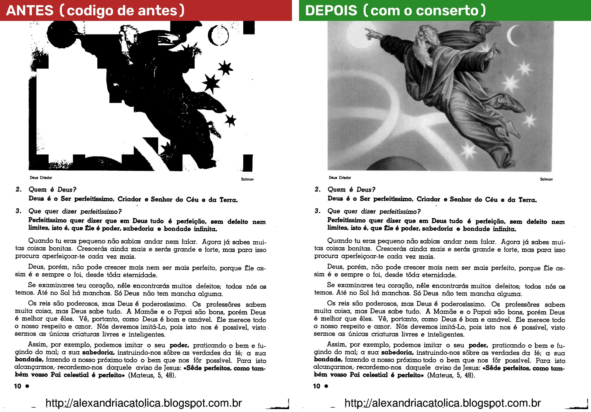
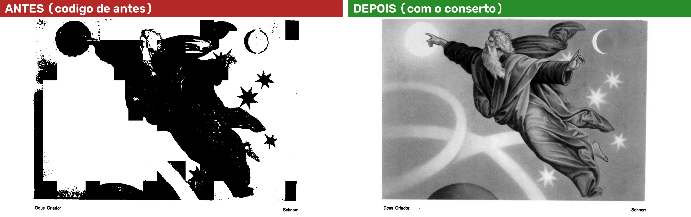
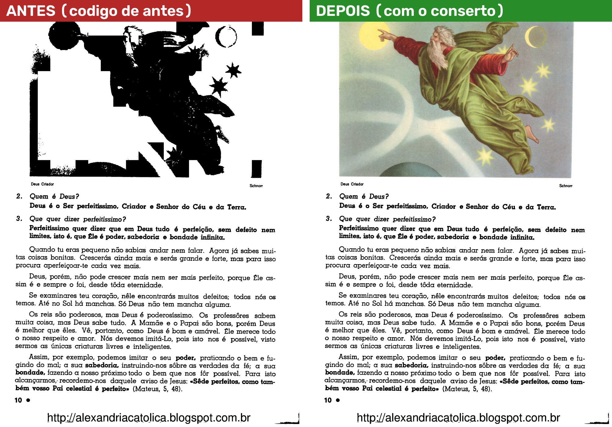
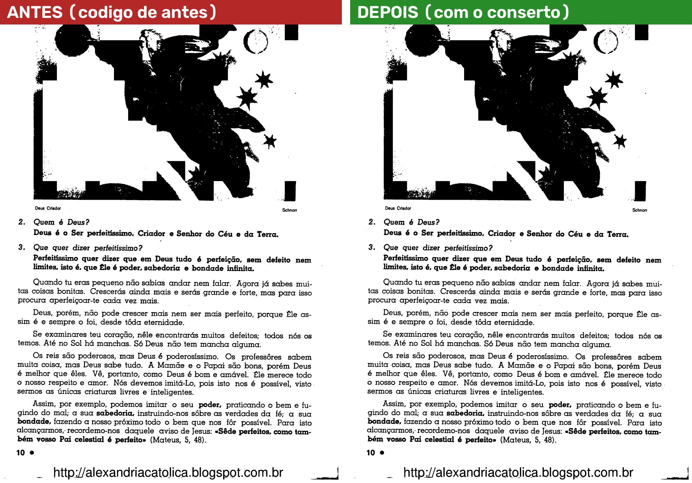
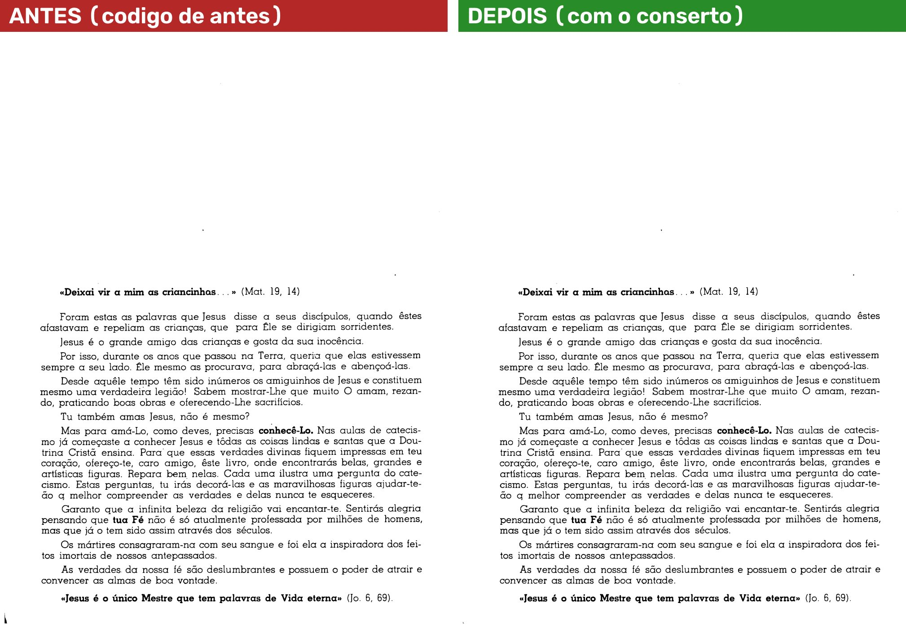

O defeito: num livro que nunca passou pelo Automático, escolher Preto e branco no painel "Filtro da página" estragava a gravura (manchas pretas), mesmo com "Respeitar as gravuras achadas" e "Gravuras em tons de cinza" marcadas. Era a página 8 do Na escola de Jesus (prints 01 e 02 da sessão 4, 09/11/2026).
O conserto: agora, sem o Automático, quando a página está em Preto e branco escolhido à mão e uma das três caixinhas está marcada ("Respeitar as gravuras achadas", "Gravuras em tons de cinza" ou "Só as letras"), o programa procura a gravura só nessa página. Se você usar "todas" ou "daqui em diante", procura só nas páginas que receberam a opção. Página sem a opção não é procurada. A etapa 5 do Automático ("Gravuras e fotos") continua desmarcada.
Suas palavras (D-659): "ele vai procurar a gravura quando eu selecionar a opção ali no filtro né? e ai se eu selecionar para o livro todo ou para varias paginas, ele vai procurar nas paginas especificas, não precisa procurar em todas." e "se estamos no manual e eu estou fazendo ajustes em uma pagina, ele vai procurar só naquela pagina se eu optar para que ele faça aquele ajuste em varias paginas ai sim o programa vai ler as outras paginas".
Como as imagens foram feitas: numa cópia do PDF do Na escola de Jesus (199 páginas), aberta como livro novo, sem o Automático, igual ao que o programa faz ao abrir. A página foi posta em Preto e branco escolhido à mão, do mesmo jeito que o clique no painel grava, e desenhada no tamanho do PDF (300 DPI), com o detector de gravura de verdade. Em cada imagem, à esquerda o código de antes e à direita o código com o conserto. Seu projeto não foi aberto nem alterado. Sem prints da janela: por ordem sua, o programa não foi aberto na sua tela.
O que olhar: a gravura de cima. Antes, manchas pretas, como no seu print 01. Depois, a gravura em tons de cinza, como no seu print 02 (no Automático). O texto fica igual nas duas.

A gravura de perto:

O que olhar: a gravura sai em tons de cinza mesmo sem o "Respeitar", como você pediu em 02/11 ("por gravuras em tons de cinza sozinho já deveria resolver o problema"). Nesta página o resultado é o mesmo do caso 1: o programa já tomava esta gravura por foto, e foto sai cinza no Preto e branco.

O que olhar: com "Só as letras", só as letras viram preto e branco. A gravura sai como no original, colorida (D-148). Antes, também virava manchas.

O que olhar: as duas imagens são iguais, ponto por ponto. Com as três desmarcadas o programa não procura nada, e o filtro vale na página inteira (D-586: "Desligada, o filtro vale na página inteira").

O que olhar: o texto fica igual. A página é procurada (a caixinha "Respeitar" vem marcada) e não tem gravura. A única diferença está numa marca preta do scanner no canto de baixo, à esquerda, fora do texto: o programa a reconheceu e ela quase sumiu. São 261 pontos em 7 milhões (0,004% da página). É a mesma conta que o Automático faz quando procura gravuras.

O canto de baixo, aumentado:
Medido no seu PC, numa página do tamanho do PDF (300 DPI). Nesse momento o PC também rodava testes, então os números estão um pouco altos.
| O que você faz | Páginas procuradas |
|---|---|
| Preto e branco "só nesta" na página 1, e depois anda pelas páginas 2 e 3 | só a 1 (na tela e ao gerar o PDF) |
| Página 2 de 4, Preto e branco, depois "todas" | as 4 |
| Página 2 de 4, Preto e branco, depois "daqui em diante" | 2, 3 e 4 (a 1 nunca) |
| Preto e branco na página 1 e na 3 de 4 | só a 1 e a 3 |
| As três caixinhas desmarcadas | nenhuma |
| Melhorar, Mágico pro ou Original à mão | nenhuma |
Depois do clique no Preto e branco, a tela podia voltar a mostrar a folha crua, sem filtro e sem corte, no lugar da prévia certa. Era um defeito antigo na troca da prévia pela imagem do tamanho do PDF: um nome de variável estava sendo usado para duas coisas. Ele também atingia páginas depois do Automático com "Gravuras em tons de cinza" e a etapa 5 desmarcada. Consertado, com prova própria.
Editor de Impressão · gerado em 09/11/2026 às 17:11